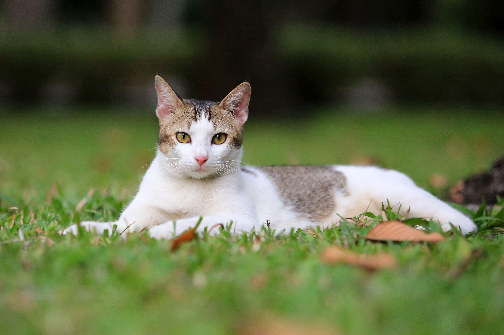

Whiskers, 3 år 🐾
Personlighet: Lekfull och busig 😻

Mittens, 5 år 🐾
Personlighet: Snäll och lugn 😸

❮
❯
Luna, 2 år 🐾
Personlighet: Nyfiken och lekfull 😽
Här möts kattälskare från hela världen. Utforska charmiga kattprofiler, lägg till dina egna favoriter
och upptäck hur vädret påverkar våra lurviga vänners humör.
KattKompis är platsen där nyfikenhet och gemenskap möts – allt med ett mjukt jam!
Whiskers, 3 år 🐾
Personlighet: Lekfull och busig 😻
Mittens, 5 år 🐾
Personlighet: Snäll och lugn 😸
Luna, 2 år 🐾
Personlighet: Nyfiken och lekfull 😽